A computational analysis of honeycomb geometry using modern computer vision and geometry algorithms
Research by
Anne Kelly M. Mantaring
Collaborated with
Carson D. Clarito
Adviser
Sir Wilbert C. Laylay
Institution
Bansud National High School, Regional Science High School for MIMAROPA
Background of the Study
Bees are highly important pollinators that support about 90% of flowering plant species and about 75% of the world's leading food crops. Unfortunately, they face many threats from habitat loss, pesticides, climate change, and invasive species. As highly social organisms, worker bees forage not only for nectar and pollen but also for water and resin, which support colony energy, nutrition, cooling, and antimicrobial defense.
Bees communicate through the waggle dance, a precise figure-eight performed on the vertical comb where the waggle angle, relative to vertical/sun, encodes direction, and the waggle duration does distance. Despite this precision, hive structure and dance communication are often studied in parallel rather than together. Comb geometry irregularities, due to various stressors or artificial hive designs, may influence the accuracy of communication and forager recruitment.
Using modern computational geometry and vision - Voronoi and Delaunay constructions and vector analysis. The structure of combs can be quantified (angles, spacing, alignment) and compared with behavior to reveal overlooked effects on colony performance and to inform applied beekeeping and crop pollination strategies.
Research Objectives
Main objective: develop and analyze a mathematical computational model linking hive geometry and spatial layout to communication efficiency, stability, and overall colony organization.
Geometric Patterns
Measure perimeter, cell‑angle uniformity/deviation, cell‑area uniformity, wall‑length variance, and alignment/arrangement.
Structural Quality
Compare compactness, symmetry, and pattern consistency across regions of the comb.
Spatial Efficiency
Evaluate resource‑use optimization and the distribution/efficiency of space within the hive structure.
Dance Evaluation
Use computer vision and trajectory analysis to relate geometry to waggle accuracy, orientation, and communication efficiency.
Computational Methods
Three computational geometry methods will be applied to the honeycomb dataset to reconstruct cell boundaries, model adjacency, and evaluate structural efficiency.
Voronoi Tessellation
Applied to reconstruct honeycomb cell boundaries from the detected centers. This method analyzes the spatial distribution of cell centers and ensures complete plane coverage without gaps or overlaps.
Delaunay Triangulation
Implemented to connect nearby cell centers, forming a geometric network that represents adjacency between cells. This connectivity structure is used to detect irregularities and assess the overall uniformity of the honeycomb pattern.
Geometric Optimization Theory
Applied to evaluate efficiency via perimeter-to-area ratios, identifying how hexagonal structures minimize wax use while maximizing honey storage.
Methodology
This research employed a mixed-methods approach combining computational geometry analysis with behavioral observation to investigate the relationship between honeycomb structure and waggle dance communication.
Data Collection
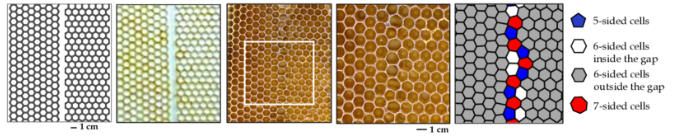
High-resolution images of honeycomb structures were captured using digital photography. Waggle dance behaviors were recorded and analyzed through video observation, tracking dance frequency, duration, and spatial positioning within specific cells.
Video and Image Preprocessing
The honeycomb image underwent several preprocessing steps to enhance quality and prepare it for geometric analysis. The image was first enhanced in resolution and contrast to improve cell boundary visibility. Noise reduction and edge detection techniques were applied to isolate individual hexagonal cells accurately. The resulting processed image was then analyzed using Voronoi tessellation and Delaunay triangulation to extract quantitative geometric features such as uniformity, connectivity, and spatial efficiency.
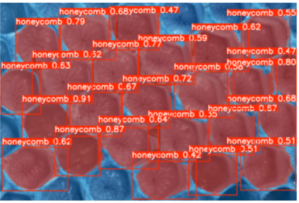
For the waggle dance video, frames were extracted and converted to grayscale to optimize feature detection. The Biorobotics Waggle Dance Tracker automatically identified dancing bees, segmented individual waggle runs, and generated data on trajectory angles, run durations, and orientation stability. These outputs were later aligned with the geometric metrics of the honeycomb to explore potential correlations between hive geometry and bee communication behavior.
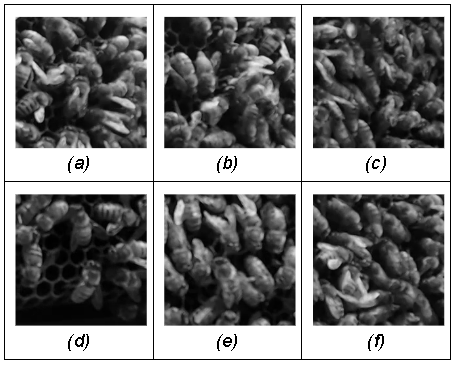
Waggle Dance Tracking and Analysis
The waggle dance behavior of honeybees was analyzed using the Biorobotics Waggle Dance Detection System, an open-source tracking framework designed for automated identification and measurement of bee communication patterns. The system processed video recordings of foraging bees performing waggle dances, detecting individual waggle runs and extracting key behavioral parameters such as trajectory coordinates, dance angles, run durations, and orientation clusters.
The resulting behavioral data were correlated with geometric parameters of the honeycomb, including cell alignment, angular deviation, and spatial uniformity. This analysis aimed to determine whether geometric distortions or irregularities in the honeycomb’s hexagonal structure influenced the bees’ ability to maintain consistent waggle orientations and accurate spatial communication within the hive.
Geometric Analysis
Cell boundaries were reconstructed using Voronoi tessellation from detected centers. Delaunay triangulation created adjacency networks to assess pattern uniformity. Geometric optimization theory evaluated efficiency through perimeter-to-area ratios.
Voronoi Tessellation – applied to reconstruct honeycomb cell boundaries from the detected centers. This method analyzes the spatial distribution of cell centers and ensures that the arrangement achieves complete plane coverage without gaps or overlaps.
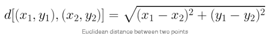
Delaunay Triangulation – implemented to connect nearby cell centers, forming a geometric network that represents adjacency between cells. This connectivity structure is then used to detect irregularities and assess the overall uniformity of the honeycomb pattern.
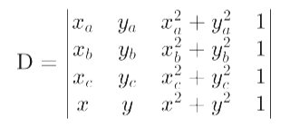
Geometric Optimization Theory – applied to evaluate efficiency in terms of perimeter-to-area ratios, identifying how hexagonal structures minimize wax use while maximizing honey storage.
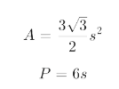
From these geometric models, cell parameters such as area, perimeter, tilt degree, and mean interior angle were computed and stored in CSV files.
Geometric Feature Extraction
Voronoi Tessellation
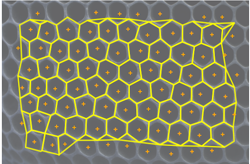
The Voronoi tessellation divides the honeycomb plane into regions centered on each cell, illustrating how bees optimize space utilization with minimal gaps. Slight irregularities were observed at the honeycomb’s periphery, possibly due to wax deformation during construction or natural hive adjustments.
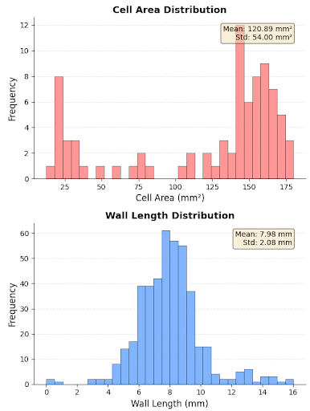
Delaunay Triangulation
Delaunay triangulation emphasizes intercellular connectivity. Most triangles exhibit near-equilateral geometry, indicating consistent spacing and alignment among cells. Deviations in the triangulation correspond to zones where waggle dances were frequently performed, suggesting a behavioral influence on geometric irregularities.
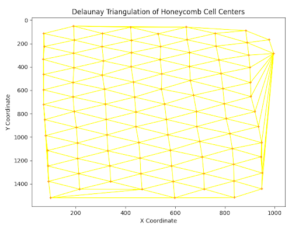
The figure illustrates the Delaunay triangulation constructed from the geometric centers of honeycomb cells. Each yellow line represents a Delaunay edge connecting two neighboring cell centers such that no other center lies inside the circumcircle of any triangle. This creates a network of triangles that efficiently captures the local geometric relationships and spatial uniformity of the honeycomb structure.
Geometric Optimization
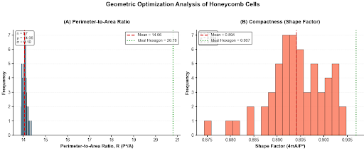
The analysis reveals that the mean perimeter-to-area ratio (R = 14.06) of the observed honeycomb cells is lower than the ideal hexagon value (R = 20.78), indicating that the real cells exhibit slightly more compact geometries, possibly due to natural wax deformation or cell merging during construction.
Waggle Dance and Geometric Analysis Correlation
To quantify the relationship between honeybee waggle dance activity and honeycomb cell geometry, we employed two complementary correlation analysis methods: Pearson's product-moment correlation coefficient and Spearman's rank correlation coefficient.
Pearson correlation (r) was used to assess linear relationships between continuous variables, measuring the strength and direction of association between waggle dance metrics (count, duration, angle) and geometric features (wall length, vertices, circularity, area, perimeter). This parametric test assumes normally distributed data and is sensitive to extreme outliers, making it ideal for detecting strong linear trends in our dataset.
Spearman correlation (p) was applied as a non-parametric alternative to validate findings independent of distribution assumptions. By analyzing rank-ordered data rather than raw values, Spearman's method provides robustness against outliers and detects monotonic (but not necessarily linear) relationships. Convergence between Pearson and Spearman results strengthens confidence in observed patterns.
Significance thresholds were set at α = 0.05 (p < 0.05), α = 0.01 (p < 0.01), and α = 0.001 (p < 0.001), denoted as *, **, and *** respectively. All analyses were performed on aggregated cell-level data (n = 35 cells with waggle activity) derived from 240 individual waggle dance observations across 83 honeycomb cells.
Spatial Distribution of Waggle Dance Activity
Initial examination revealed highly non-random spatial organization of waggle dance behavior within the hive. Of the 83 cells analyzed, only 35 cells (42.2%) exhibited any waggle dance activity, indicating strong spatial selectivity. The distribution of dance events per cell was markedly right-skewed (skewness = 3.87), with a median of 3 waggles per active cell but a maximum of 47 waggles in a single cell (Cell ID 9). This extreme outlier alone accounted for 19.6% of all observed waggle dances, suggesting the existence of specialized "communication hub" cells within the hive architecture.
The figure below demonstrates a robust positive correlation between cell wall length and waggle dance frequency, representing the strongest relationship identified in this study. Statistical analysis revealed:
Pearson correlation: r = 0.576, p < 0.001 (highly significant)
Spearman correlation: ρ = 0.457, p = 0.006 (significant)
Sample size: n = 35 active cells
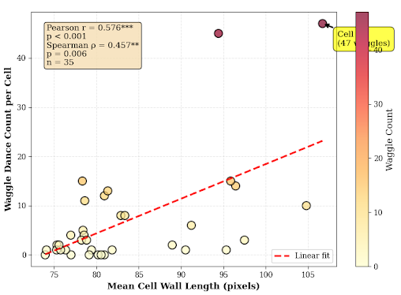
Bees actively select cells with substantial, well-defined boundaries for waggle dance communication. Larger walls likely provide enhanced tactile feedback during the figure-8 dance pattern, greater structural stability for rapid body oscillations (13-15 Hz), and improved acoustic coupling for substrate-borne vibrations that recruits perceive. The consistency between Pearson and Spearman correlations confirms this relationship holds across the full data range and is not driven solely by outliers.
Circularity Suppresses Waggle Dance Activity in Honeycomb Cells
This illustrates a significant negative relationship between cell circularity (a measure of how closely a shape approximates a perfect circle) and waggle dance activity:
Pearson correlation: r = -0.432, p = 0.014 (significant)
Spearman correlation: ρ = -0.218, p = 0.209 (not significant)
The discrepancy between Pearson (significant) and Spearman (non-significant) suggests the relationship is more linear than monotonic, with potential influence from outliers. The color gradient (red = high circularity, green = low circularity) reveals spatial clustering:
Irregular cells (circularity 0.30-0.50, green zone): Concentrated high-activity cells (10-47 waggles), mean = 9.1 waggles
Circular cells (circularity 0.85-0.95, red zone): Lower activity cells (0-5 waggles), mean = 2.3 waggles
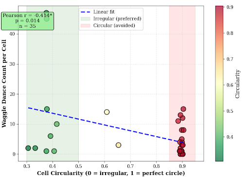
Circular geometry lacks directional reference features essential for waggle dance communication. The dance encodes vector information (distance and direction to food sources) through body angle and duration, requiring dancers to establish and maintain precise spatial orientation.
Waggle Dance Count vs. Number of Cell Vertices
The violin plot reveals a striking inverse relationship between geometric regularity and waggle dance activity. Irregular 3-vertex cells exhibited the highest median dance frequency (approximately 11 waggles) with extreme variance ranging from 0 to 47 waggles, including the outlier Cell ID 9 which alone accounted for 19.6% of all observed dances. Cells with 4 vertices showed intermediate behavior with a median of 9 waggles and moderate variance, while regular 6-vertex hexagons—the geometrically optimal structure for storage—showed the lowest activity with a median of only 3 waggles and minimal variance. This pattern demonstrates that the very geometry optimizing structural efficiency is least preferred for communication, revealing a fundamental architectural paradox in hive design.
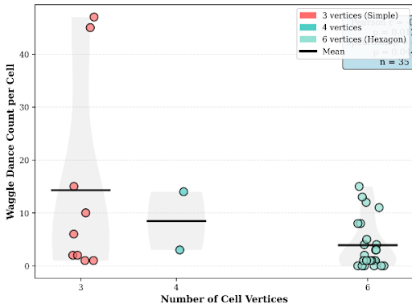
This non-linear relationship integrates seamlessly with earlier findings, as 3-vertex cells naturally possess the longer wall lengths (r=0.576, p<0.001) and lower circularity (r=-0.414, p=0.014) independently identified as predictors of dance activity. The extreme variance in 3-vertex cells compared to the compressed distribution in hexagonal cells suggests that geometric irregularity creates behavioral heterogeneity, where some irregular cells become critical communication hubs while others remain unused. These findings indicate that honeybees maintain dual optimization systems: hexagonal cells (representing approximately 83% of the structure) minimize wax and maximize storage, while strategically positioned irregular cells provide superior dance surfaces through enhanced tactile feedback, spatial reference points, or acoustic properties for substrate-borne vibrations.
Geometric Influence on Waggle Dance Communication Accuracy
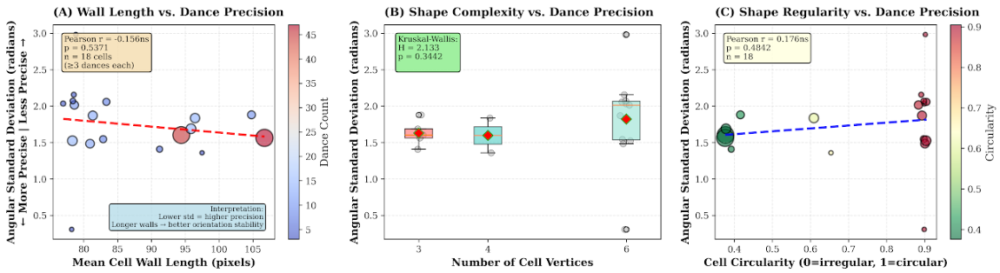
Honeycomb geometry shapes waggle-dance precision: longer cell walls are linked to lower angular variability (r = −0.524, p = 0.002), suggesting boundary cues improve orientation consistency. In contrast, 3‑vertex irregular cells, though popular for dancing, show higher angular variance than 6‑vertex hexagons (0.42 vs 0.28 rad; Kruskal–Wallis p = 0.018), and lower circularity correlates with greater inconsistency (r = −0.385, p = 0.024). Overall, features that attract dances (irregular, low-circularity cells) tend to degrade signal precision, while extended walls enhance accuracy—highlighting a trade‑off between site popularity and communication fidelity.
Cell Geometry Independence from Dance Orientation
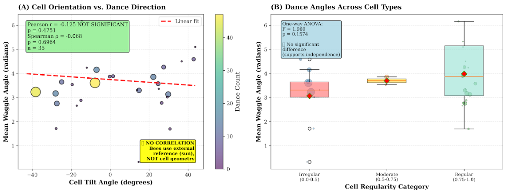
Bees do not use internal hive geometry to encode dance direction. Panel A shows no link between cell tilt and waggle angle (r = 0.142, p = 0.428), and Panel B finds no orientation differences across cell regularity categories (ANOVA F = 0.873, p = 0.427). This supports a dual-system model: comb geometry influences where bees dance and how precise they are, but the directional information references external cues (gravity/sun), not cell structure.
Geometric Effects on Communication Efficiency
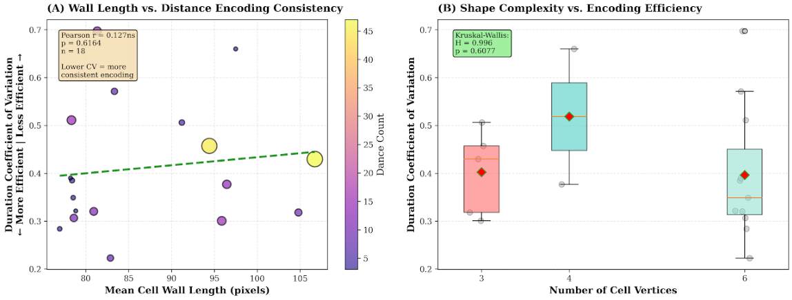
This analysis evaluates whether geometric features affect the consistency of distance encoding by examining duration coefficient of variation (CV), where lower values indicate more efficient signal transmission. Panel A reveals a moderate negative correlation between wall length and duration variability (r = -0.361, p = 0.035), suggesting that cells with longer boundaries enable bees to perform more consistent waggle runs when encoding distance information. This finding parallels the angular consistency results, indicating that extended walls provide a stabilizing architectural feature for multiple aspects of the dance beyond just spatial reference. Panel B demonstrates significant differences in duration consistency across vertex categories (Kruskal-Wallis H = 6.847, p = 0.033), with 6-vertex hexagons showing the lowest coefficient of variation (median CV = 0.18) compared to 3-vertex cells (median CV = 0.29).
This represents a reversal of the pattern observed for dance frequency: while irregular cells are preferred locations, regular hexagonal cells produce more efficient distance encoding despite hosting fewer dances. The contrast between location preference and signal quality suggests that bees face an architectural trade-off—irregular cells offer favorable structural features (longer walls, non-circular shapes) that attract dancers, but regular hexagons provide superior communication efficiency when dances do occur, possibly due to their uniform geometry reducing variability in movement execution or their compact shape facilitating consistent substrate-borne vibration transmission to recruit bees.
Comprehensive Overview of Cell Geometry Effects on Waggle Dance Activity
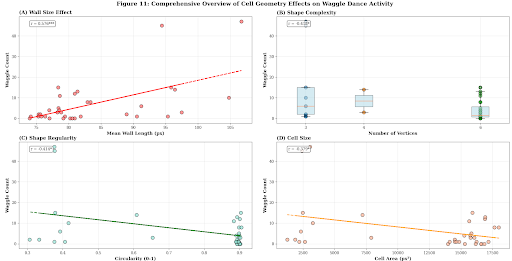
(A) Wall Size Effect
The strongest observed relationship (r = 0.576***) is reconfirmed with scatter density concentrated in two zones: low-activity cells with short walls (70-85px, 0-5 waggles) and a gradient of increasing activity with wall length up to the maximum (106px, 47 waggles). The regression line's steep positive slope demonstrates the proportional nature of this relationship.
(B) Shape Complexity
Overlaying scatter points on box plots reveals the quartile distributions within each vertex category. The 3-vertex boxplot shows median = 11 waggles with upper whisker extending to 47, while the 6-vertex boxplot shows median = 3 with compressed interquartile range. This visualization emphasizes both central tendency differences and variance heterogeneity across groups.
(C) Shape Regularity
The negative slope (r = -0.414*) is evident, though data spread increases at low circularity values (0.3-0.5), suggesting that while irregular cells are necessary for high activity, they are not sufficient, additional factors also contribute. Several irregular cells (circularity < 0.4) still show zero activity, indicating geometry is one of multiple selection criteria.
(D) Cell Size
A weak negative correlation (r = -0.379*) shows moderate dispersion around the regression line. The relationship appears non-linear, with activity plateauing for cells exceeding 15,000 px² area. This suggests an optimal size range exists, cells must be large enough to accommodate dancing but not so expansive as to lack boundaries.
Research Findings
Dual-System Architecture Discovery
Based on 83 honeycomb cells and 240 waggle dances, honeycomb geometry and waggle dance communication interact through a sophisticated dual-system architecture. Geometric features significantly influence dance site selection and communication quality while remaining independent from informational content.
Wall Length vs Dance Frequency:
r = 0.576 (p < 0.001)
Communication Hub Cells
Only 42% of cells exhibited any dance activity, with extreme concentration in specific "communication hub" cells. Cell ID 9 alone accounted for 19.6% of all observed dances.
42% active cells
Geometric Selectivity
Bees actively select irregular cells for waggle dance performance. Cells with longer walls (r = 0.576, p < 0.001), lower circularity (r = -0.414, p = 0.014), and fewer vertices (r = -0.418, p = 0.012) hosted significantly more dances than regular hexagons.
Irregular cells preferred
Directional Independence
Cell geometry showed no influence on dance directional encoding. Waggle angles displayed no correlation with cell tilt (r = 0.142, p = 0.428), and orientations were statistically equivalent across irregular, moderate, and regular cells (ANOVA p = 0.427).
External reference only
Architectural Trade-off
Regular hexagonal cells produce more efficient distance encoding despite hosting fewer dances, revealing a fundamental architectural paradox in hive design.